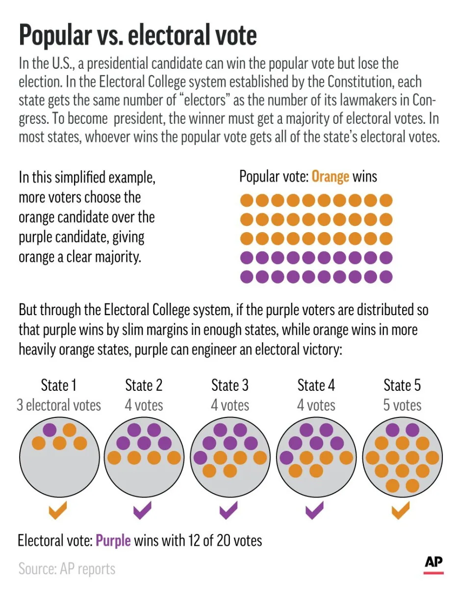

Post
How America Elects Its President
The Electoral College vs. Popular Vote
Not all that popular
Every four years, Americans cast their ballots for president, but the winner isn’t always the candidate who gets the most votes. In 2016, more than 138 million people voted in the general election, but only 538 of them directly voted for president and vice president.
This is because the United States uses a unique, and some argue outdated, system called the Electoral College that can—and has—produced presidents who lost the popular vote nationwide.
This complex process, written into the Constitution over 200 years ago, continues to shape American democracy in ways many voters don’t fully understand. Rather than voting directly for the president and vice president, citizens vote for a slate of electors pledged to each candidate in their respective states, who make up the 538-member Electoral College.
Here’s how the Electoral College works, why it exists, and why it remains one of the most debated aspects of American elections.
What Is the National Popular Vote?
The national popular vote is the total number of individual votes cast for each presidential candidate across all 50 states and Washington, D.C. Add up every ballot from Maine to Hawaii, and whoever gets the most votes “wins the popular vote.”
This seems like the most democratic way to choose a president. After all, shouldn’t the candidate preferred by the majority of Americans become president?
But in the U.S. system, winning the popular vote doesn’t guarantee winning the presidency. The candidate who gets the most individual votes can still lose the election if they fail to win enough Electoral College votes. This fundamental disconnect between popular will and electoral outcome has occurred five times in American history, most recently in 2000 and 2016.
What Is the Electoral College?
The Electoral College isn’t a place, but a process. Think of it as a multi-step procedure for choosing the president that involves electors, state governments, and Congress.
Here’s the basic idea: Instead of voting directly for president, Americans vote for a group of people called electors who then cast the actual votes that determine the winner. These electors meet in their respective states in December to officially choose the president and vice president.
The system was created as a compromise at the Constitutional Convention in 1787. The founders couldn’t agree on whether Congress should pick the president or whether there should be a direct national vote. The Electoral College split the difference, creating an indirect method that balanced various competing interests.
Split vote
The Five Divergent Elections
1824: Adams vs. Jackson
Andrew Jackson won both the popular vote (42.3% to John Quincy Adams’ 31.6%) and the most electoral votes (99 to 84), but no candidate secured an Electoral College majority. The House of Representatives chose Adams, leading to accusations of a “corrupt bargain” when Adams appointed Henry Clay as Secretary of State after Clay’s supporters helped Adams win the House vote.
1876: Hayes vs. Tilden
Samuel Tilden won the popular vote decisively (50.9% to Rutherford B. Hayes’ 47.9%), but electoral votes from four states were disputed amid widespread allegations of fraud and voter intimidation. A special Electoral Commission awarded all 20 disputed votes to Hayes by an 8-7 party-line vote, giving him a 185-184 Electoral College victory in one of the most contentious elections in American history.
1888: Harrison vs. Cleveland
Grover Cleveland won the popular vote (48.6% to Benjamin Harrison’s 47.8%), but Harrison won the Electoral College 233-168 by carrying key swing states like New York and Indiana. Cleveland’s larger margins in Southern states, where Black Republican votes were heavily suppressed, couldn’t overcome Harrison’s strategic victories.
2000: Bush vs. Gore
Al Gore won over 540,000 more popular votes nationwide (48.38% to George W. Bush’s 47.87%), but Bush won the Electoral College 271-266. The election hinged on Florida, where Bush was declared the winner by just 537 votes after recounts and legal battles. The Supreme Court’s controversial 5-4 decision in Bush v. Gore halted further recounts, effectively awarding Florida’s 25 electoral votes and the presidency to Bush.
2016: Trump vs. Clinton
Hillary Clinton won nearly 2.9 million more popular votes (48.2% to Donald Trump’s 46.1%), but Trump won the Electoral College 304-227 by securing narrow victories in key swing states including Pennsylvania, Michigan, and Wisconsin.
The increasing frequency of split outcomes—two in the 21st century after more than a century without one—suggests modern political alignments and demographic patterns may make these results more likely. Each instance has intensified calls for reform and raised questions about democratic legitimacy when the candidate preferred by more Americans doesn’t become president.
